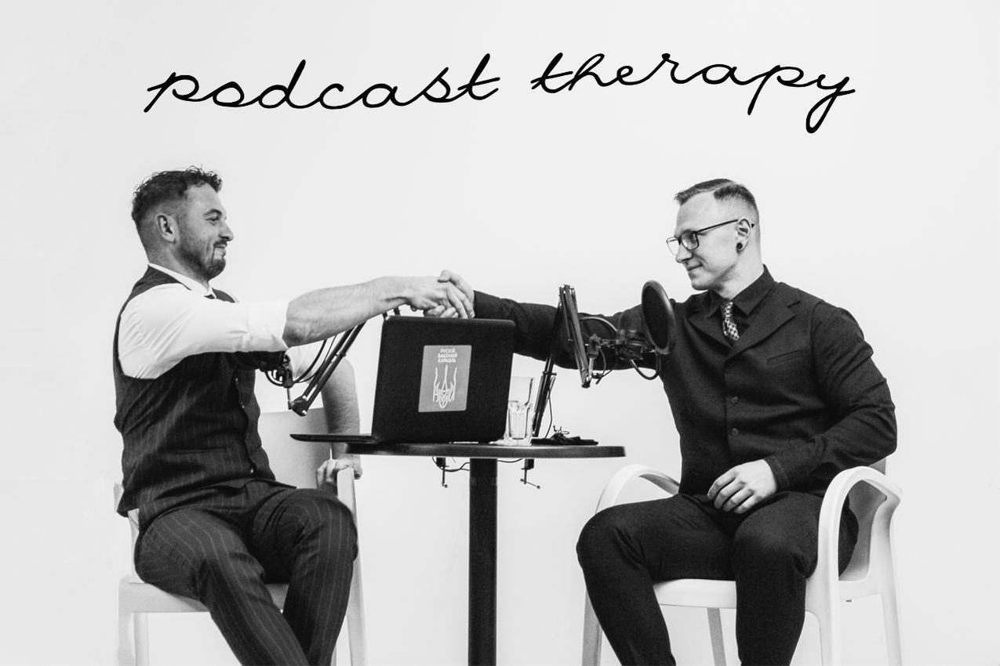
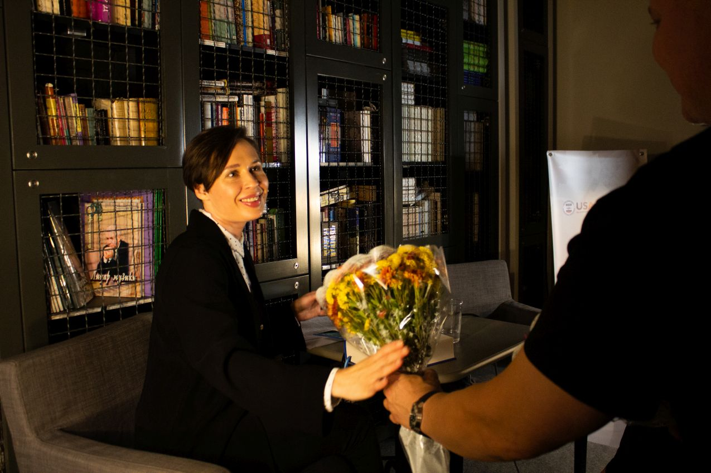
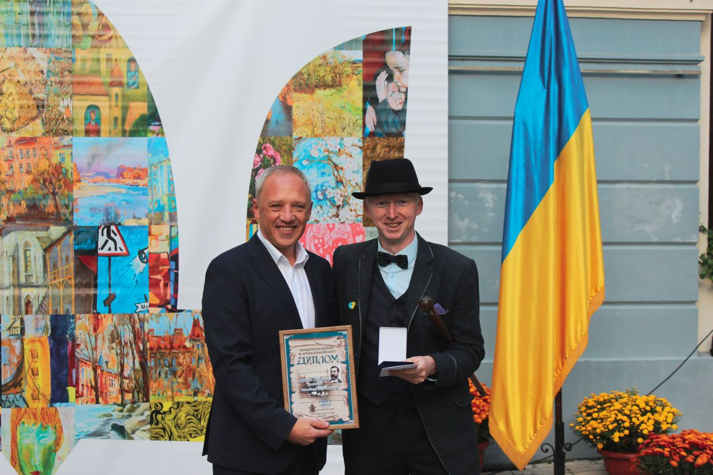
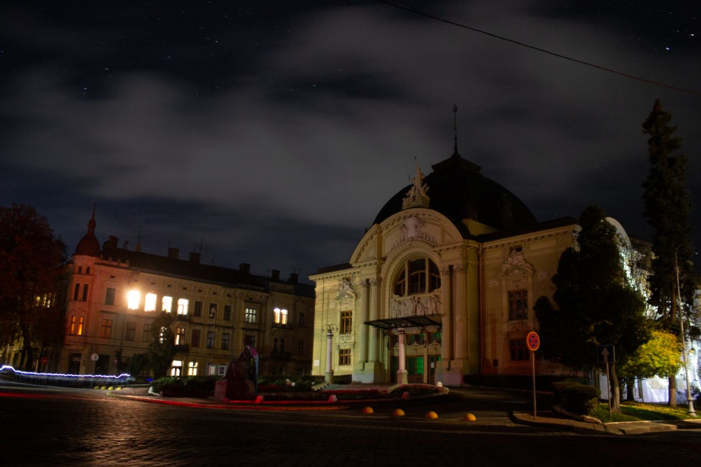
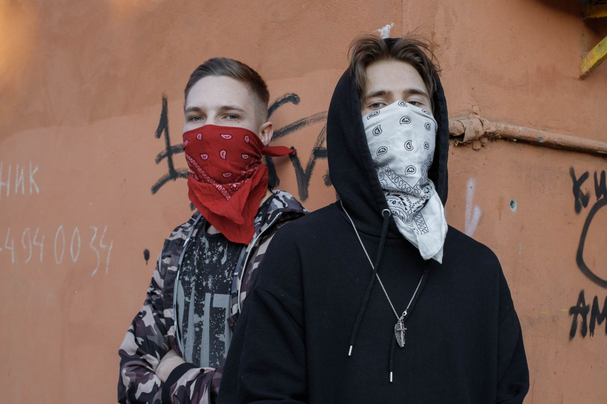

Podcast therapy

"Подкаст терапія" з актором і коміком Євгенієм Яновичем. Спартак
— спеціаліст у галузі когнітивно-поведінкової психотерапії та
схема-терапії, психіатр. Кандидат з психологічних наук, PhD
медичної психології. Експерт у галузі психології серійних
убивць, судової психіатрії. Член американської асоціації
психологів.
Literature evening

У неділю, 23 жовтня 2022 року, о 19:00 у Літературному
целанівському центрі (вул. Кобилянської 51, Чернівці) відбудувся
літературний вечір – читання та розмова за участі української
письменниці, перекладачки та публіцистки родом з
Івано-Франківська Софії Андрухович.
Pan Yarko

«Вчора 8 жовтня я отримав премію Антона Кохановського в
номінації "Молодіжна ініціатива року" у дворику міської ради.
Вручення. Отримав премію від міського голови, але знаю, що цьому
передувала підтримка чернівчан і тисяч моїх туристів.»
Outage impact

«XXVI.X.MMXXII, Chernivtsi city center The impact of a power
outage since the 20 of October (Russian missile strikes on
Ukrainian energy infrastructure in 10 October began)»
88 whiskey

kqlix (a.k.a. 88whiskey) was born in Chernivtsi (Черновцы),
Ukraine. International musician, particularly well-known due to
his famous single «Петля» and its friend also well-known
worldwide photographer «didrux», who is a producer and the
helper of the kqlix back then he was broke (early 2020, starting
of 88whiskey's career).